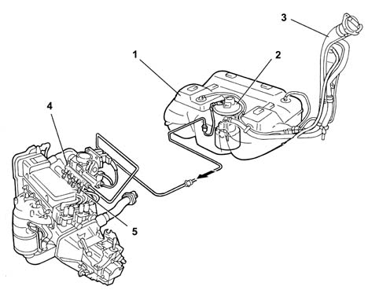
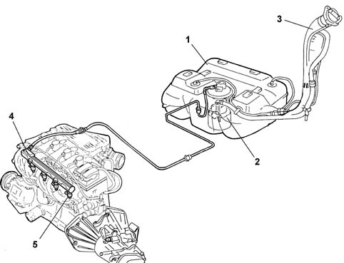
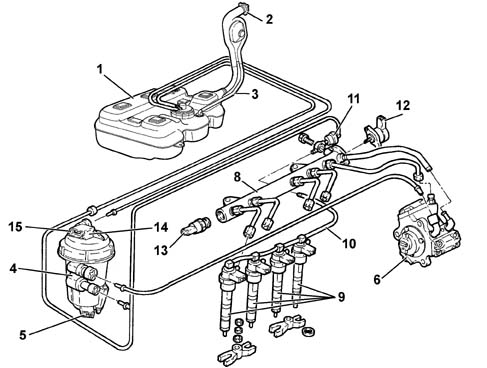
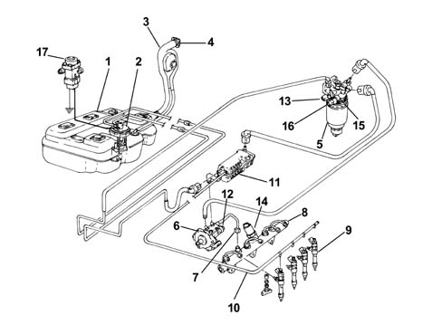
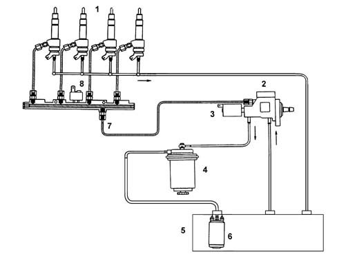
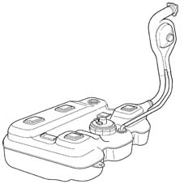
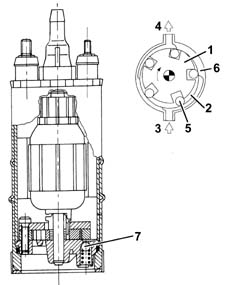
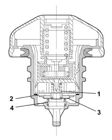
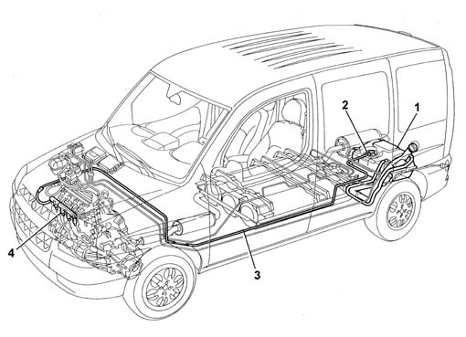
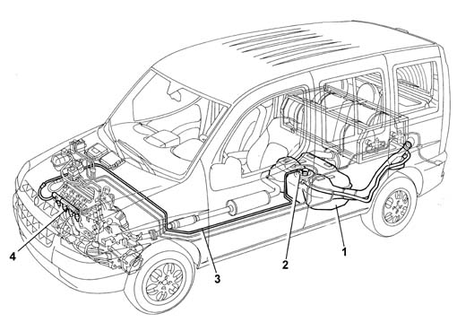

INTRODUCTION - FUEL TANK AND PIPES
- Path
- Descriptions > 10 ENGINE > 1040 FUEL TANK AND PIPES > INTRODUCTION - FUEL TANK AND PIPES
- Kind
- system description
- Applies to
- engines: 1.2 8v, 1.6 16v, 1.3 JTD 16V, 1.9 JTD 8V; all production periods; only with equipment: Cargo trim level and Doblò trim level and BIPOWER
- Interactive page
- https://sloeber94.github.io/elrnDB-fDbl/en/#/2551018
Applies to: engines: 1.2 8v; all production periods
The fuel system is the 'returnless' type, i.e. with only one connecting pipe between the fuel tank and engine, on account of which the return pipe, the filter and the pressure regulator have been dispensed with; the latter two components are incorporated in the pump assembly.
This makes it posible:
- to minimize the possibility of the vehicle catching fire in the event of an accident
- to reduce fuel vapour emissions into the atmosphere.
The fuel tank, located in front of the rear axle, is made from a plastic material with high mechanical strength, and has a capacity of 60 litres.
The fuel system consists of the components illustrated in the figure below.

1, Fuel tank
2, Complete immersed pump assembly
3, Fuel filler pipe
4, Fuel manifold
5, Injectors (see 1056)
Applies to: engines: 1.6 16v; all production periods
The fuel system is the 'returnless' type, i.e. with only one connecting pipe between the fuel tank and engine, on account of which the return pipe, the filter and the pressure regulator have been dispensed with; the latter two components are incorporated in the pump assembly.
This permits the following:
- to minimize the possibility of the vehicle catching fire in the event of an accident
- to reduce fuel vapour emissions into the atmosphere.
The fuel tank, located in front of the rear axle, is made from a plastic material with high mechanical strength, and has a capacity of 60 litres.
The fuel system consists of the components illustrated in the figure below.

1, Fuel tank
2, Immersed pump assembly _ 3, Fuel filler pipe
4, Fuel manifold
5, Injectors (see 1056)
Applies to: engines: 1.3 JTD 16V; all production periods
This fuel injection system uses an electronically-controlled high injection pressure and a fuel supply method achieved through a main injection and one or several pilot injections (depending on the engine operating conditions) electronically controlled by the injection control unit through the injector. This system can carry out up to five injections per cycle (depending on the engine operating conditions).
The pressure value represents one of the fundamental parameters for optimum fuel consumption and exhaust fumes.
Management with several pilot injections makes pre-heating the combustion chamber possible, so preventing the pressure preak caused by rapid combustion, ensuring smoother operation and further reducing emissions.
The adjustment of the injection pressure is made possible thanks to the construction features of the system which has a pressure pump, pressure regulator, pressure sensor and separate injectors, all managed by a control unit. In this way the injection pressure does not depend on the engine rotation speed
The main features of the fuel supply system are:
- high injection pressure (up to 1400 bar);
- possibility of modulating the injection pressure from 150 to 1400 bar in all engine operating conditions;
- introduction of fuel up to 50 mm3/cycle at a speed of between 100 and 5200 rpm;
- precise injection control, for both injection advance and duration of injection;
- one or two pilot injections, before T.D.C., managed in relation to the engine rpm and load which allows the pressure to be distributed evenly in the combustion chamber with a reduction in the noise level.
The fuel supply system is divided into a low pressure circuit and a high pressure circuit.
The low pressure circuit consists of:
- an auxiliary electric pump immersed in the tank;
- the fuel filter with internal cartridge;
- the fuel return manifold pipe;
- the connecting pipes.
The high pressure circuit consists of:
- the pressure pump;
- the single fuel manifold pipe with integrated pressure regulator and pressure sensor;
- injectors;
- the connecting pipes.

1 - Fuel tank
2 - Fuel filler pipe
3 - Reflux pipe
4 - Fuel filter
5 - Water in fuel filter sensor
6 - Pressure pump
7 - High pressure pipes
8 - Single fuel manifold pipe
9 - Injectors
10 - Pipe from injectors to fuel return manifold pipe
11 - Fuel return manifold pipe
12 - Pressure regulator
13 - Fuel pressure sensor
14 - Fuel temperature sensor
15 - Fuel heater
Applies to: engines: 1.9 JTD 8V; all production periods
The fuel supply system is divided into a low pressure circuit and a high pressure circuit.
The low pressure circuit consists of:
- tank
- auxiliary electric pump submerged in the tank
- multi-purpose valve
- diesel filter;
- return manifold.
The high pressure circuit consists of:
- Radialjet pressure pump (see 1060);
- distribution manifold (see 1060);
- injectors

1, Fuel tank
2, Immersed pump unit complete with fuel gauge sender unit
3, Fuel filler pipe
4, Multi-purpose valve
5, Diesel filter cartridge
6, Pressure pump
7, High pressure pipes
8, Distribution manifold
9, Injectors
10, Injector recirculation
11, Return (low pressure) manifold
12, Pressure regulator
13, Fuel temperature sensor
14, Fuel pressure sensor
15, Diesel heater
16, Thermal switch
17, Inertia switch.
The diesel is drawn from the tank by means of a pre-supply electric pump operating at 12 V, which provides a sufficient flow rate to ensure the lubrication and cooling of the Radialjet pump as well.
The diesel filter is mounted between the electric pump and Radialjet pump.
The high-pressure hydraulic connections are made by means of steel pipes with an internal diameter of 2 mm and external diameter of 6 mm.
The pump recirculation must be sent to the tank separately from the fuel injector recirculation which, after being collected in a single pipe, is also sent to the tank.

1, Injector
2, Pressure pump
3, Pressure regulator
4, Fuel filter
5, Fuel tank
6, Immersed fuel pump
7, Distribution manifold (rail)
8, Fuel pressure sensor
CONSTRUCTION FEATURES
The fuel tank, with a capacity of about 60 litres, is made of a plastic material.
It is fitted with a flexible filler and comprises the seating for fitting the fuel pump and fuel gauge sender unit.

CONSTRUCTION FEATURES
The electric pump immersed in the fuel is the positive-displacement roller type with a permanent-magnet brush motor.

OPERATTION
The impeller (1) rotates, driven by the motor, creating volumes (2) which move from the inlet port (3) to the supply port (4).
These volumes are defined by rollers (5) which, whilst the motor is rotating, adhere to the outer ring (6).
The pump has two valves, one single-acting valve to prevent the fuel circuit from being drained (with the pump not working) and a second excess pressure valve (7) which recirculates the supply when the pressure exceeds 5 bar.
OPERATTION
This valve is built into the fuel filler cap, and it carries out the following functions, depending on the pressure present in the tank:
- it discharges to the outside any surplus pressure which is created inside the tank (safety function); the pressure acts on the plate (2) and, overcoming the load of the spring (1), allows the surplus vapours to be discharged to the outside.
- it allows external air to flow into the tank when an excessive vacuum is created in the tank, following the consumption of fuel (ventilation function). In this case, when the vacuum exceeds the load of the spring (4), it moves the valve (3), allowing air to enter.

Applies to: engines: 1.6 16v; all production periods; only with equipment: BIPOWER
The dual fuel supply system (petrol and methane) consists of a traditional fuel supply system (Magneti Marelli IAW 4AF.G1) for running on petrol integrated with a CNG fuel supply system (Metatron) for running on methane.
The methane fuel system is described in subgroup
See descriptions 1042 CNG (METHANE) GAS CANISTER AND PIPES
.
The fuel system is the 'returnless' type, i.e. with only one connecting pipe between the fuel tank and engine. The return pipe, the filter and the pressure regulator have therefore been eliminated. the latter two components are incorporated in the pump assembly.
This permits the following:
- to minimize the possibility of the vehicle catching fire in the event of an accident
- to reduce fuel vapour emissions into the atmosphere.
Applies to: engines: 1.6 16v; all production periods; only with equipment: Cargo trim level and BIPOWER
FUEL SUPPLY SYSTEM
The fuel system wiring diagram is illustrated below.

1, Fuel tank
2, Immersed pump assembly
3, Petrol supply pipe
4, Fuel manifold/injector
Applies to: engines: 1.6 16v; all production periods; only with equipment: Doblò trim level and BIPOWER
FUEL SUPPLY SYSTEM
The fuel system wiring diagram is illustrated below.

1, Fuel tank
2, Immersed pump assembly
3, Petrol supply pipe
4, Fuel manifold/injector